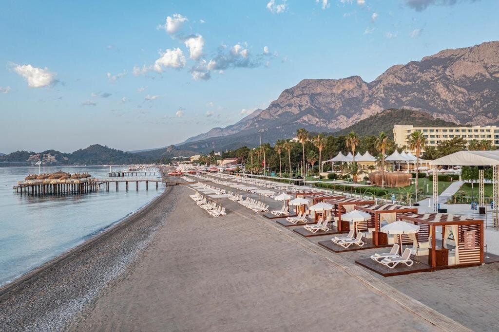

Swandor Hotels & Resorts Topkapi Palace ★★★★★, Кунду
Mirage Park Resort – это та самая дольче вита, ради которой туристы выбирают отдых в Турции. Отель находится на первой линии и является образцом классической эстетики. На него приятно смотреть, в нем приятно отдыхать.
Более 600 номеров с бесплатным сейфом, вай-фаем и мини-баром. Интересные варианты для семейного отдыха – джуниор и фэмили рум. Вид прекрасен везде – на море, горы или парк.
У отеля есть собственный песчано-галечный пляж со всей современной инфраструктурой. А досугом гостей занимается команда из 15 аниматоров – днем это спортивные занятия и соревнования, вечером – традиционные шоу-программы и дискотека. Плюс три бассейна, пять теннисных кортов и поля для спортивных игр для тех, кто предпочитает самостоятельные тренировки.
Чем отель вас точно удивит, так это набором гастрозаведений: восемь а-ля картов и одиннадцать баров позволят не повториться с меню ни разу за все путешествие. Но еще больше впечатляют главные рестораны – в основном такой выбор, что даже можно забыть об а ля картах, а в глютен-фри ресторане отличный рацион для тех, кто предпочитает безглютеновую кухню.
"Почти впервые понравилась анимация в Турции. Легкая, ненапряжная, но сделано все хорошо и в меру. Вечером всегда какое-нибудь шоу. Хороший спа – есть сауны, хамам, бассейн подогреваемый. По питанию особо сказать нечего – вкусно, хорошо, вау-эффекта нет, но достойно. Единственное, фреши утром только за деньги, в других отелях брали их бесплатно. По территории приятно гулять – зеленая, большая, вечером красивая подсветка. Есть мини-зоопарк, детям, наверное, должен понравиться." – Елена В.